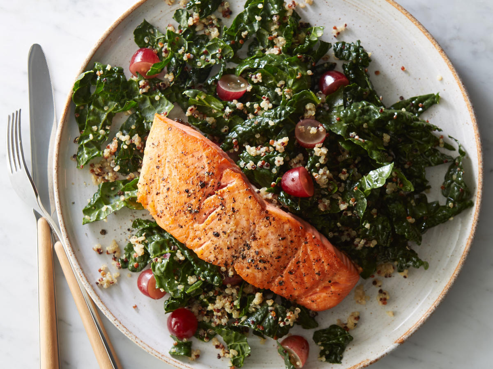

Baked Salmon with Kale

Baked salmon with kale is a simple dish requiring very little preparation and effort. A perfect dinner after a busy and tiring day.
Ingredients
- Olive oil
- ~225g salmon fillet
- 1/2 tbs lemon juice
- 1 sprig of dill chopped
- 200g of kale leaves stripped and torn
- salt and pepper to taste
- 200g of brown rice and quinoa, pre-cooked
Steps
- Preheat oven to 160C/fan 140C.
- Coat large piece of foil with oil.
- Place salmon in the centre, pour over lemon juice and scatter over dill.
- Add kale and season the parcel with salt and pepper.
- Bring sides of the foil together to seal the foil, and bake for 15-20 minutes or until salmon flakes apart (don't overcook!).
- Serve rice, salmon, and kale and drizzle over any juices.